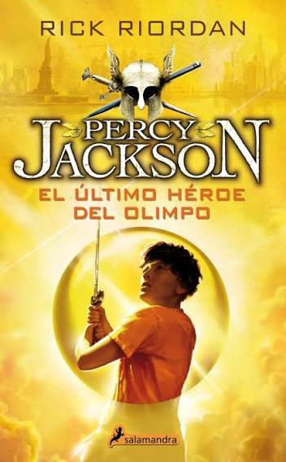

Libro favorito:

Soy muy fan de la saga de Percy Jackson, pero este libro, exactamente el quinto de este arco, es el que más me gusta.
Particularmente porque, al ser el último libro, hay muchos detalles y cosas interesantes, además del suspenso y el drama en cada momento.
Sin duda, mi personaje favorito es Rachel Elizabeth Dare.